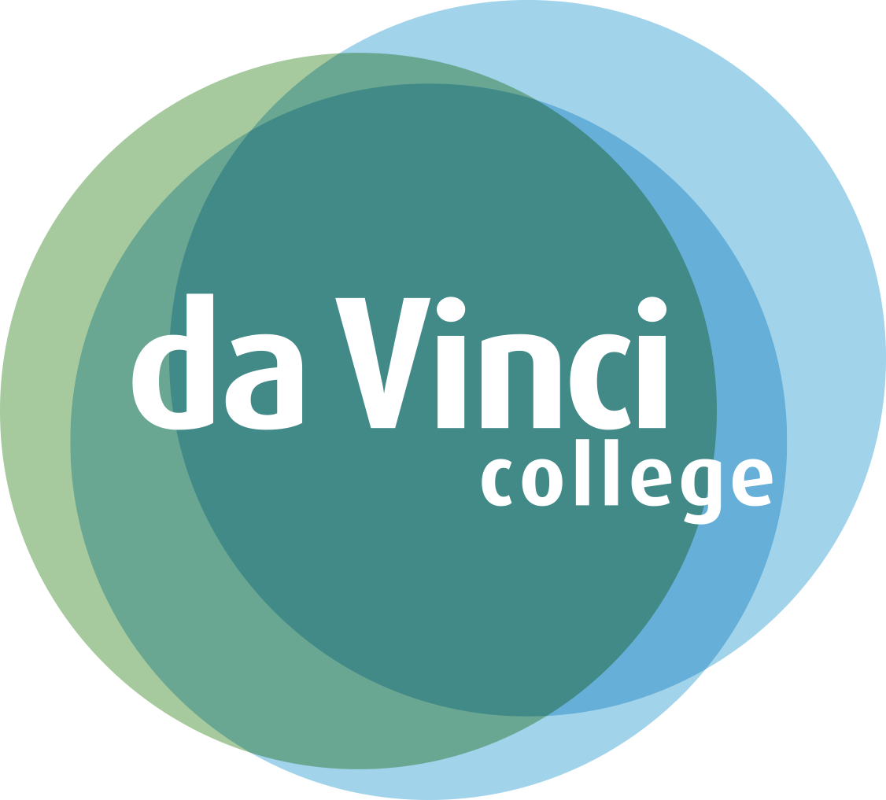

Wie ben ik ?
Ik ben Michael Karssen. 19 jaar oud en woon in Asperen.
Samen met mijn ouders en tweelingzus woon ik op een woonwagenkamp.
Dit jaar ben ik begonnen met de opleiding Applicatie en mediaontwikkelaar
Niveau 4. Deze opleiding studeer ik in Gorinchem op het DaVinci College. Ik heb deze opleiding gekozen omdat ik het leuk vind om met software te werken.